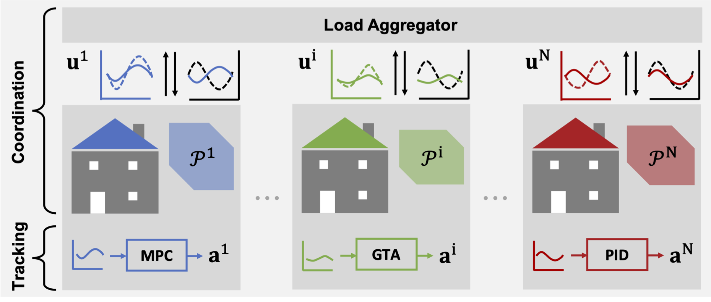

Responsible Virtual Power Plants

Central to our ability to avoid a climate crisis through decarbonization is a radical shift in the operation of the electrical power system to allow for the integration of clean energy sources that are less predictable, reliable and not continuously available (e.g., wind, solar). Due to the nature of power systems and the practicalities of storing electricity, the grid is operated to maintain a careful and continuous balance between demand and supply at all times. Thus, increased renewables in the grid will require us to move away from centralized scheduling and control of large predictable carbon intensive generation resources (e.g., gas and coal power plants) and towards decentralized coordination of a multitude of demand-side resources that can better accommodate the increased amount of intermittent and variable generation resources that are being introduced into the grid. In other words, solving our climate crisis requires that we completely change the way we operate buildings, allowing them to become a reliable asset for grid operations.
The US Department of Energy (DOE) estimates that unlocking this resource could result in national benefits exceeding US$18 billion a year by 2030, and a reduction in Green House Gas emissions of over XX%. However, to achieve this, individual participants (e.g., single domestic loads with flexibility potential such as domestic water heaters, or small photovoltaic systems) need to be aggregated through coordination in order for them to be able to provide meaningful services in the same way that traditional power plants did before. Because of the timescales at which these decisions are made, most of the decisions are done autonomously with little to no human interaction (e.g., if there is excess wind capacity at some point in time, a network of electric water heaters can store this excess electricity by increasing water temperature by a few degrees without needing to coordinate this action with the end users). This shift is already underway and there are a number of companies, sometimes referring to themselves as virtual power plants, providing services to the grid (anywhere from peak shaving to frequency regulation) by coordinating the usage of large collections of customers who they contract with. Autonomous technologies, such as smart thermostats, smart chargers for electric vehicle batteries, smart and connected heat pumps and other products are paving the road towards this vision.
As this shift towards more responsive demand and more grid-enabled buildings continues, it is important to ask ourselves if and how these autonomous technologies are taking into consideration the values of the communities that they serve when making decisions on their behalf. To start, as decision-making moves from centralized resources to distributed ones, it is important to respect end-user privacy. Similarly, security and safety concerns become more pertinent when the control of loads is passed on to the hands of algorithms (both because they can be abused by malicious actors, but also because it may lead to unintended consequences). Less evident but just as important are equity and justice considerations in this space. Without properly aligning the incentives for these contracts between aggregators and resource owners, there is the risk of ignoring the impacts and opportunities for large portions of the community. As an example, if only homeowners with smart thermostats can participate in this market, we may be distributing the rewards unevenly across the community when we could have used excess capacity to cool low-income homes that are more sensitive to energy costs.